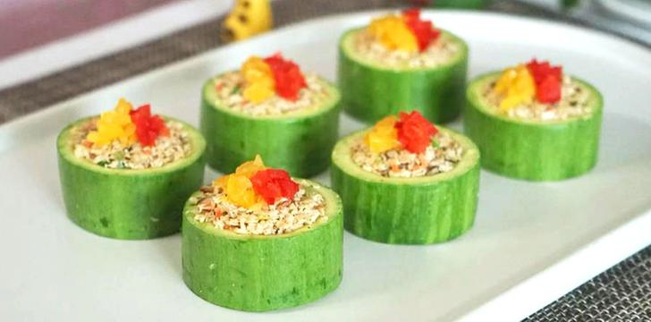
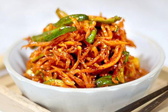

오늘 읽을만한 글 주제별로 분류된 다양한 글모음 671개의 글 관심주제 설정
| 엔터 |
스포츠 |
자동차 |
웹툰 |
경제 |
추천.구독 |
레시피 |
리빙 |

[오늘의 푸드TV] 아재주부
애호박 두부찜, 예쁘고 건강한 채식 식단
비타민이 풍부한 애호박과
단백질이 풍부한 두부의 만남
#손님상차림 #건두부요리

레시피
오이말랭이 진미채무침, 별미 반찬 만들기
오이말랭이 진미채무침, 별미 반찬 만들기 오이 말랭이를 이용해 별미 밑반찬을 하나 만들
어봤어요. 꼬들꼬들한 오이 말랭이로 만드는 #고추장진미 는 밥반찬으로도 좋지만 물이...
2개월 전 수씨부인